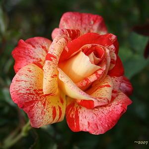

| Alternative cultivar names: |  | ||||||
|---|---|---|---|---|---|---|---|
| 'Modern Magic' | 'CHRisgood' | 'Punch' | 'Rainbow Warrior' | 'Punch Sunflor' | |||
| basic information | |||||||
| Bloom size: | Medium: 2-3" | ||||||
| Petal count: | double: 16-25 petals | ||||||
| Rose bloom color: | Orange and orange blend | ||||||
| Class: | Floribunda | ||||||
| more articles: |
From garden.org
From regannursery.com |
||||||